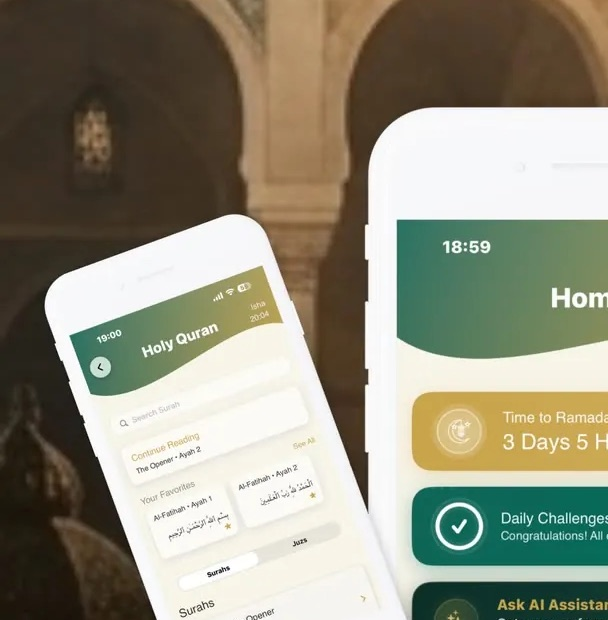
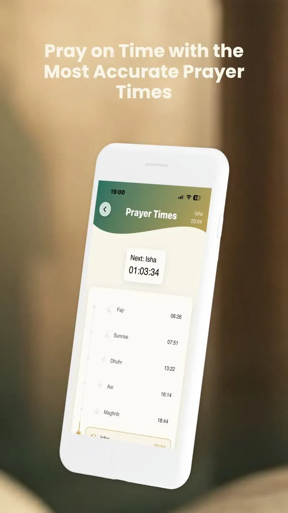
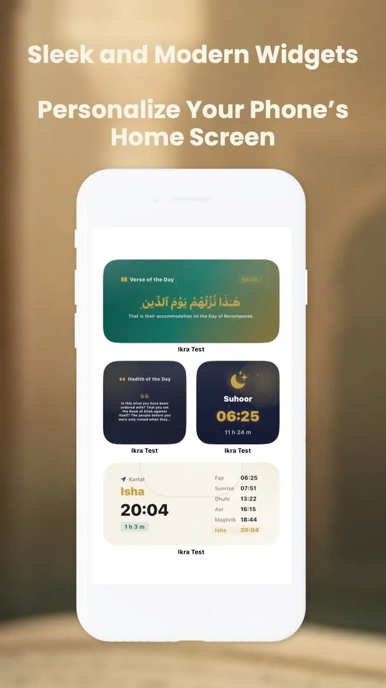
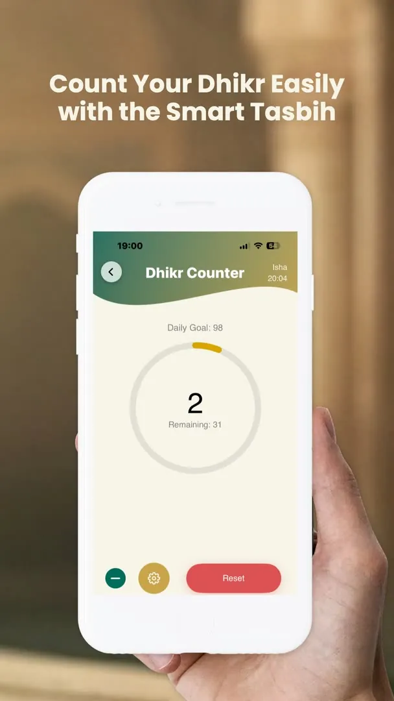
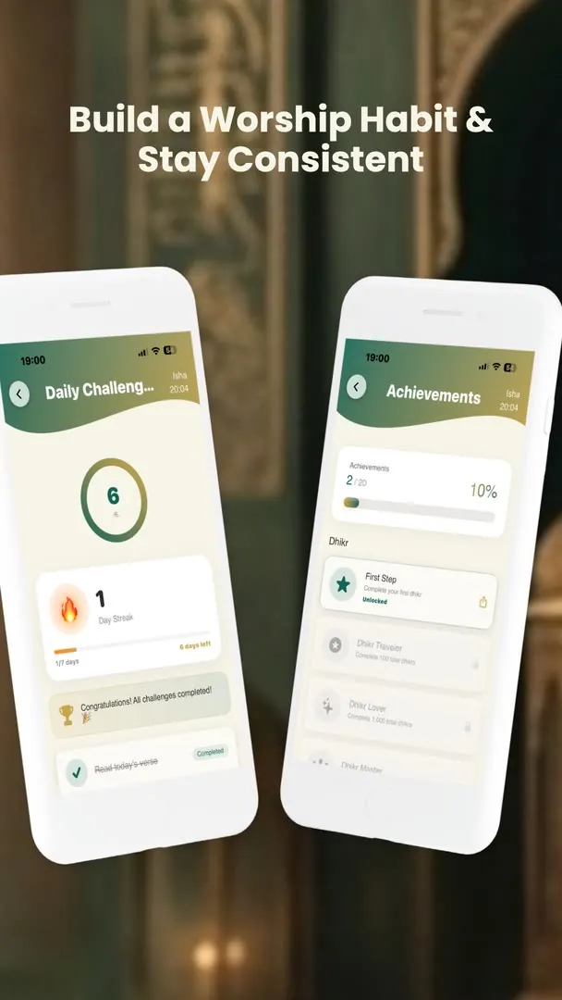

Namaz vakitleri ve ezan
Bulunduğun konuma göre beş vakit, imsak ve güneş saatleri; bir sonraki vakte kalan süre ve vakit bildirimleri.
iPhone ve Android · 21 dil
Namaz vakitleri, Kur'an okuma ve dinleme, kıble, zikir, dua, hadis ve İslami takvim tek uygulamada. İkra sabah ezanından yatsıya kadar gününe eşlik eder.

Tek uygulamada
Bulunduğun konuma göre beş vakit, imsak ve güneş saatleri; bir sonraki vakte kalan süre ve vakit bildirimleri.
114 surenin tamamı, meal ve dinleme desteğiyle. Kaldığın yerden devam et, ayetleri favorilerine ekle.
Pusula tabanlı kıble yönü; şehir değiştirdiğinde yeniden ayarlamaya gerek yok.
Sayaçlı zikir, günlük dualar ve Esmaü'l-Hüsna; hepsi tek dokunuşla ulaşılabilir yerde.
Kur'an ve hadis kaynaklı sorularını sorabildiğin bir asistan; merak ettiğin konuyu uygulamadan çıkmadan öğren.
Hicri tarih, mübarek gece ve günler, Ramazan geri sayımı ve günün ayeti.
Uygulamadan




Kaydırarak gezin. Ekran görüntüleri uygulamanın güncel sürümünden.
İkra, bir gün içinde defalarca açılan bir uygulama. Bu yüzden her ekranı hızlı, sade ve okunaklı olacak şekilde kuruldu: vakti öğrenmek üç saniye, bir ayeti bulmak iki dokunuş.
Ücretsiz
iPhone ve Android'de yayında. Mağaza sayfaları 21 dile çevrildi.